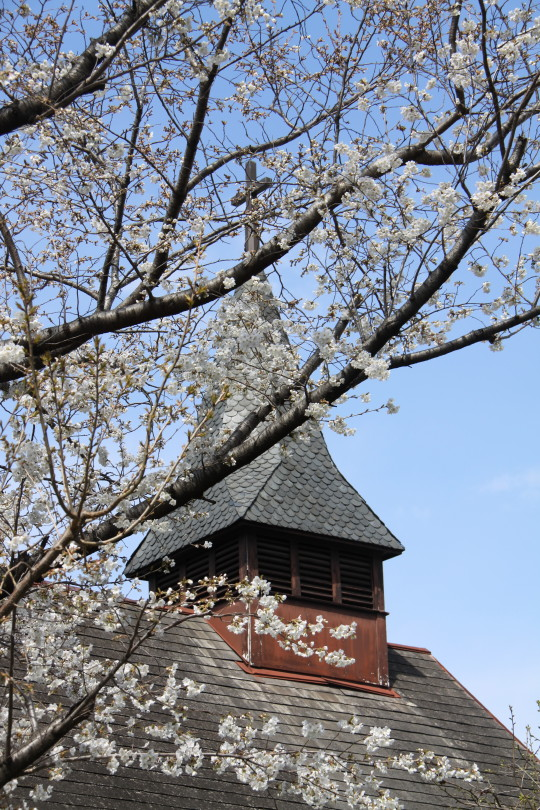
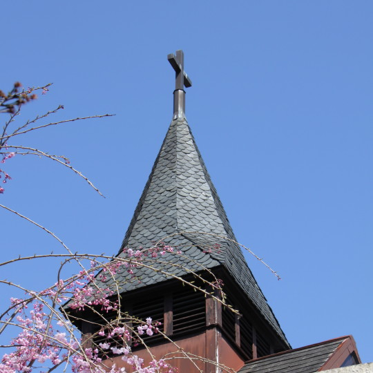
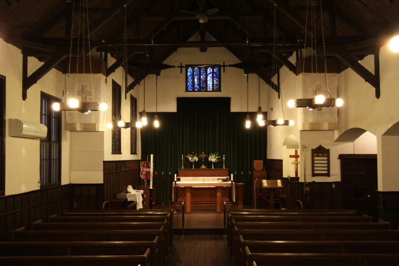
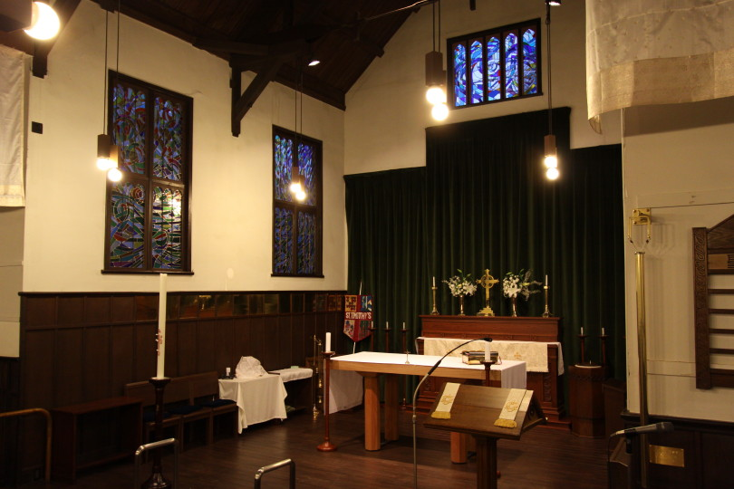
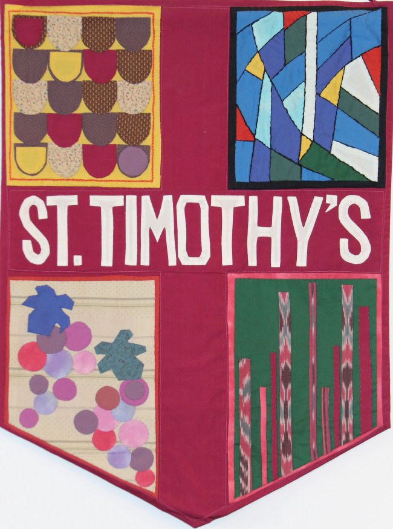
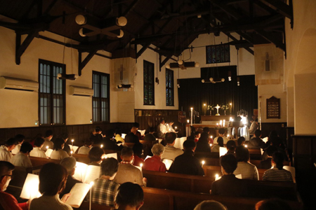
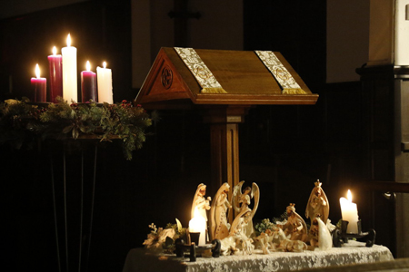

教会外観

礼拝堂屋根の十字架

礼拝堂内部

礼拝堂内部・祭壇

東京聖テモテ教会バナー

2018年3月25日：礼拝堂内部、棕櫚の十字架

2018年3月25日：礼拝堂屋根の十字架と桜

2018年3月25日：礼拝堂屋根の十字架と桜

2018年12月24日：クリスマス・イブ燭火礼拝（キャンドルサービス）

2018年12月24日：クリスマス・クリブ（主のご降誕をあらわす像）とアドベント・クランツ（蝋燭）
写真は東京聖テモテ教会のすべての画像について著作権が保護されています。無断転載・複製はご遠慮ください。